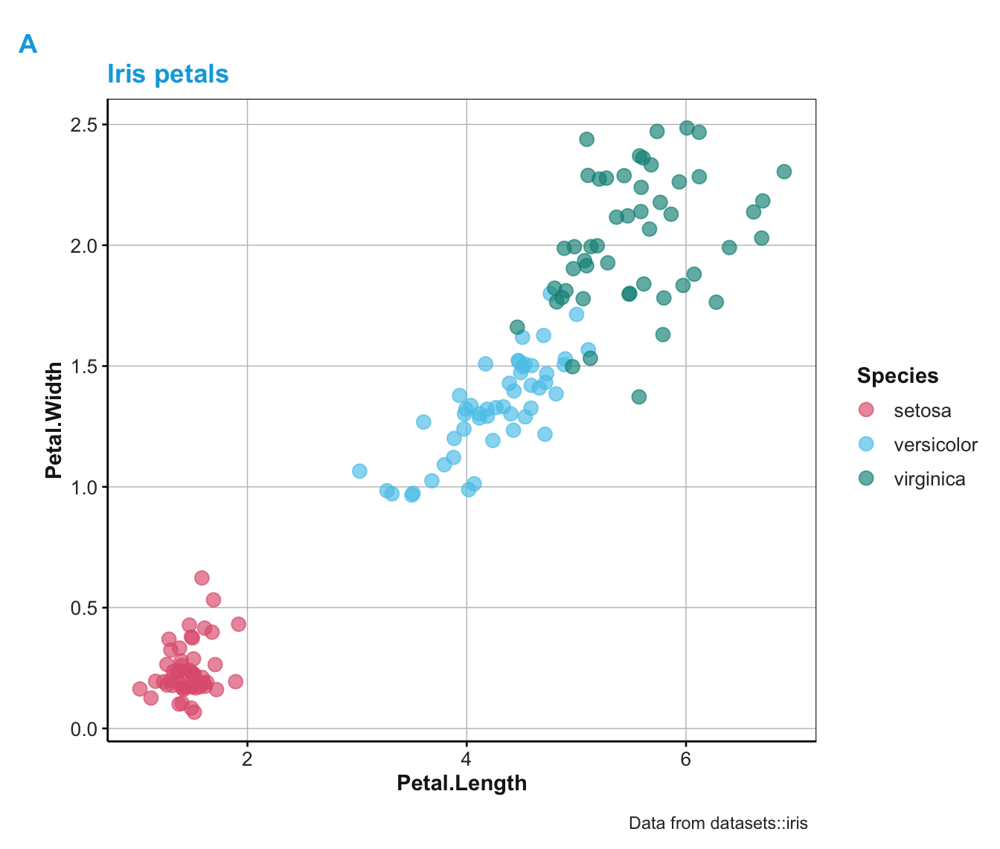

theme_unikn provides a basic unikn theme
to use in ggplot2 commands.
theme_unikn( col_title = pal_seeblau[[4]], base_size = 11, base_family = "", base_line_size = base_size/20, base_rect_size = base_size/20 )
| col_title | Color of title (text) elements (optional, numeric).
Default: |
|---|---|
| base_size | Base font size (optional, numeric).
Default: |
| base_family | Base font family (optional, character).
Default: |
| base_line_size | Base line size (optional, numeric).
Default: |
| base_rect_size | Base rectangle size (optional, numeric).
Default: |
The theme is lightweight and no-nonsense, but somewhat opinionated (e.g., in using mostly grey scales to allow emphasizing data points with color accents).
theme_grau for an alternative theme.
Other plot functions:
slide(),
theme_grau(),
xbox()
# \donttest{ # Plotting iris dataset (using ggplot2, theme_unikn, and unikn colors): library("ggplot2") # theme_unikn requires loading ggplot2 ggplot(datasets::iris) + geom_jitter(aes(x = Petal.Length, y = Petal.Width, color = Species), size = 3, alpha = 2/3) + scale_color_manual(values = usecol(pal = c(Seeblau, Pinky, Seegruen))) + labs(title = "Iris species", caption = "Data from datasets::iris") + theme_unikn(base_size = 11)# }